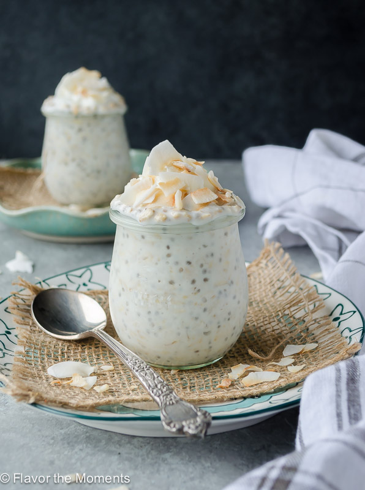

Summer Corn Chowder

Description
These creamy coconut overnight oats have a great flavor and a boost of protein from Greek yogurt
and chia seeds. I topped them with cacao nibs and almonds, but feel free to use fresh fruit or any
other topping. Add honey or maple syrup if you like them sweeter.
- ⅓ cup old-fashioned oats
- ⅓ cup coconut milk beverage
- ¼ cup nonfat vanilla Greek yogurt
- ½ tablespoon chia seeds
Steeps
- Combine oats, coconut milk beverage, Greek yogurt, chia seeds, and 1 tablespoon coconut flakes
in an 8-ounce Mason jar.
- Stir until well combined, and cover with a lid. Refrigerate for 8 hours, or overnight.
- Top with ½ tablespoon coconut flakes, cacao nibs, and almonds flakes when ready to serve. Stir and enjoy.